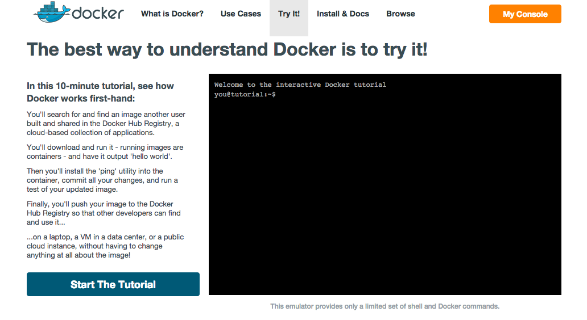
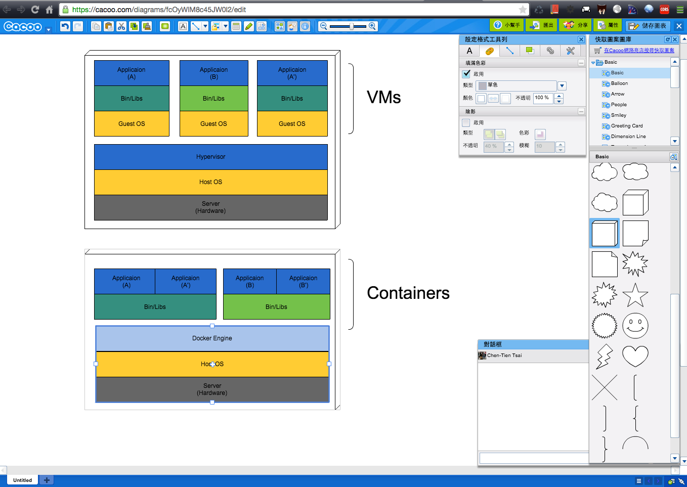

Build, Ship and Run. Any App, Anywhere! 這就是Docker寫在官網上面對自己最簡單的描述。
What is Docker

Build, Ship and Run. Any App, Anywhere!
這就是Docker寫在官網上面對自己最簡單的描述。
Docker是一個
目前Docker有超過14,000公開的Applicaion，而其中很多知名大廠都已經有官方支援的Repository了，而最後的Hand on Lab也會教大家如何將自己的Applicaion與使用這些公開的Repository，來建置自己的環境。

- Docker Engine
A portable, lightweight application runtime and packaging tool.
- Docker Hub
A cloud service for sharing applications and automating workflows.

ANNOUNCING DOCKER HUB AND OFFICIAL REPOSITORIES
Different with classic server virtualization
Docker的架構使用Container技術，雖然都屬於虛擬化的技術，且目標也同為將一套應用程式所需的執行環境打包起來，同為建立一個獨立環境，方便在不同的實體伺服器(硬體)環境使用，但兩者的運作與想法是完全不同的。
這邊做簡單說明並用圖解做一個區分：
- Classic Server Virtualization：
傳統虛擬化技術如vSphere或Hyper-V是以作業系統為中心。目標是建立一個可以用來執行整套作業系統的沙箱獨立執行環境，習慣以虛擬機器（Virtual Machine）來稱呼，而虛擬機器需要安裝作業系統（安裝Guest OS）才能執行應用程式。

- Container Virtualization:
以應用程式為中心的虛擬化技術。將所需的相關程式碼、函式庫、環境配置檔都打包起來建立沙箱執行環境，所產生的環境就叫做Container，Container內不需要安裝作業系統就能執行應用程式。不同於classic server virtualization在OS外建立虛擬環境，container virtualization是在OS內的核心系統層(System Core/Kernel)來打造虛擬執行環境，透過共用Host OS的作法，取代一個一個Guest OS的功用。

Docker is Light-weight
看完兩張圖我們要回來講Docker的輕量化，相對於我們主要的Application檔案大多只有MB等級來相比，GuestOS與Bin/Lib所佔據的空間都是GB起跳。而傳統使用VM的虛擬化技術因為各別包含這些重複的肥大的檔案，所以每個VM會比Continer檔案都還要肥大不少。
One Container One application
Docker 使用一種叫做Microservices（微服務）的架構，把一個應用系統組成的每一個Stack，依序分解成許多小型服務，而每一個服務就是包含在Container的一隻程式。
而一個Container的映象檔內可以安裝多支程式，例如同時安裝MSSQL、Node.js、ASP.net Web application等。但Docker官方建議，一隻程式安裝在一個Container內，再把需要使用到的Container疊起來提供一個完整的服務。
如此一來提供了更好更換服務的流程，更新時只會讓對應的服務重新載入Container映像檔(reload)即可，不用將全部的服務都停止或重載，這邊與傳統的VM概念就有一個不小的差異摟.
如果想要在一個Container做建置Application可以參考此篇How To Build A 2-Container App with Docker
Docker help Devops
因為Docker使用Dockerfile來記錄建立Container映象檔的每一個步驟(change)，可以將建立應用程式執行環境的過程和配置參數，完整地記錄下來。這也意味著Dockerfile這是一個可以被加入版本控制流程的一個檔案，而這樣的改變讓原本建立環境的過程不會再無跡可循，也可以不用在第一時間準備安裝流程之類的文件(如果要比較設定或改變，可以直接比較差異)，測底改善發佈與開發的流程，將基礎架構程式化（Infrastructure as code）來管理。
Hands on Lab
看了這麼多圖文，就讓我們來實際玩玩Docker吧，前置動作的流程如下：
You’ll search for and find an image another user built and shared in the Docker Hub Registry, a cloud-based collection of applications.
You’ll download and run it - running images are containers - and have it output ‘hello world’.
Then you’ll install the ‘ping’ utility into the container, commit all your changes, and run a test of your updated image.
Finally, you’ll push your image to the Docker Hub Registry so that other developers can find and use it…
…on a laptop, a VM in a data center, or a public cloud instance, without having to change anything at all about the image!
首先我們先去官方的Tryit，畫面如下：

Docker with Windows
因為Docker Engine是使用Linux-specific kernel，所以如果要在Windows上面使用的話還是需要先透過一個輕量的VM來作為載體。在這邊我們會用到Boot2Docker這個工具來幫我們。
也附上官方Demo影片教你如何安裝
結語
接下來應該會弄個Docker系列文章，順便為了鐵人賽做好準備(兩年都棄賽了XD)，對此技術有興趣的朋友歡迎一起討論與學習進步摟。
另外，因為有人寫信問說blog的一些圖表跟流程圖用什麼工具畫的，我習慣上都用Cacoo去畫圖，上面提供了很多基本的流程圖(包含UML)或是Mocup所需的框架元素(手機或是個項目Icon)。

但也有很多漂亮一點的圖我都是找網路上大大的blog或表達意像的圖片，記得使用前要附上出處與禮貌的跟大神們請示一下能否分享瞜。